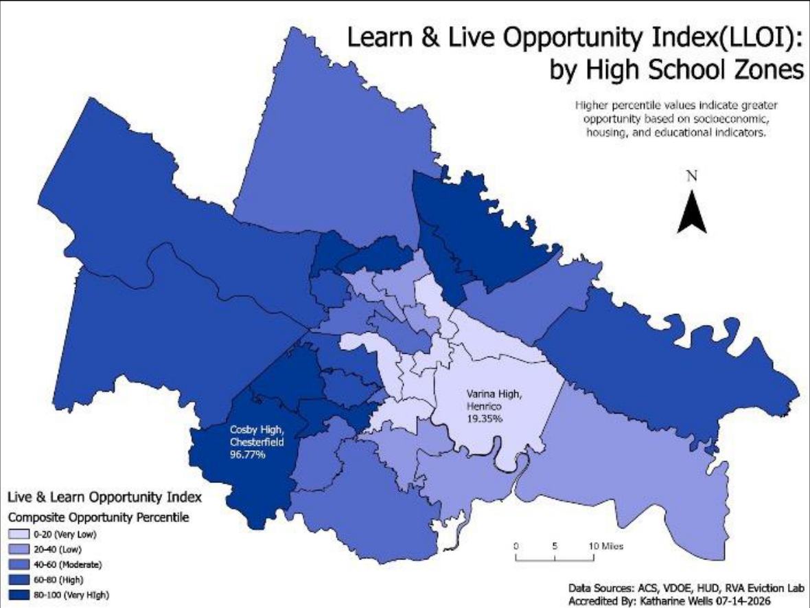

GIS and policy research · 2026
Live and Learn Opportunity Index
A collaborative framework for examining housing, educational, and socioeconomic opportunity across metropolitan Richmond.

Overview
I contribute GIS, R, and spatial-data work to a collaborative project examining how opportunity conditions vary across school attendance zones in metropolitan Richmond.
Approach
The project integrates public and housing-related data with school boundaries through reproducible R and ArcGIS Pro workflows. An index framework supports standardized, policy-facing comparisons without presenting individual-level findings.
Status
This is ongoing collaborative research. Findings and materials remain labeled as draft where full manuscripts or team-approved publications are not yet available.